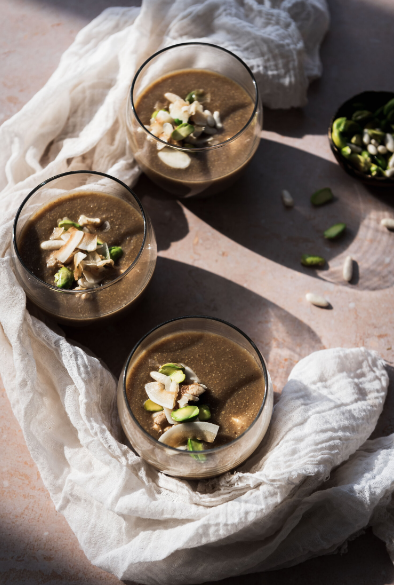

carawyah podding

our ricepe is from syria but the main ingredient is from india which called carawya
the syrians used to introduce carawya as hospitality at the birth of a new baby or in cold weather
know lets start our delicious recipe
- carwaya powder
- rice powder
- assorted nuts (pistachios, pine nuts, walnuts, etc.)
- sugar
- coconut flakes
- In a deep saucepan over heat, add all ingredients except the coconut and nuts.
- Continue stirring until you get a thick consistency and it starts to boil
- Then pour the hot caraway into yogurt cups or serving glasses
- Garnish with sprinkles of coconut and nuts.
ENJOY IT
HOME